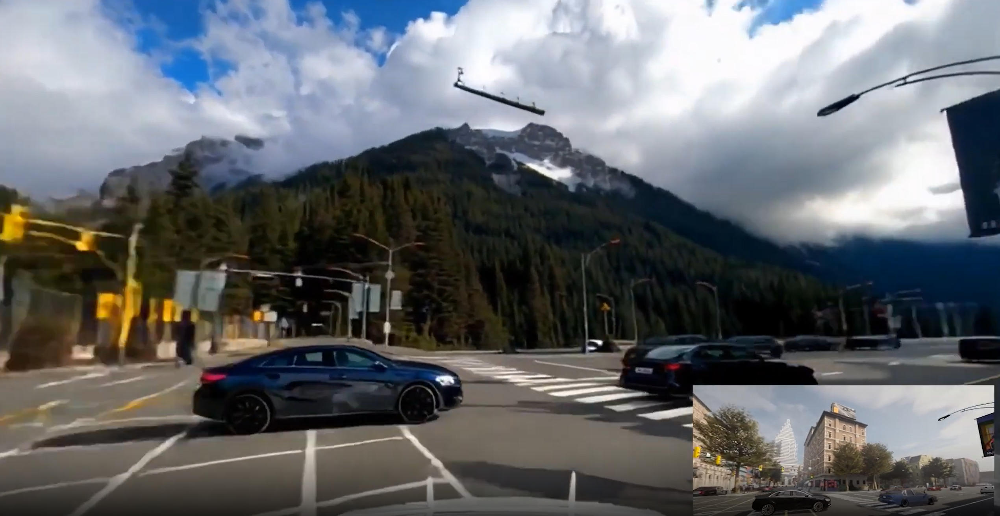
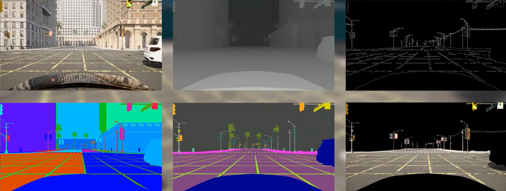
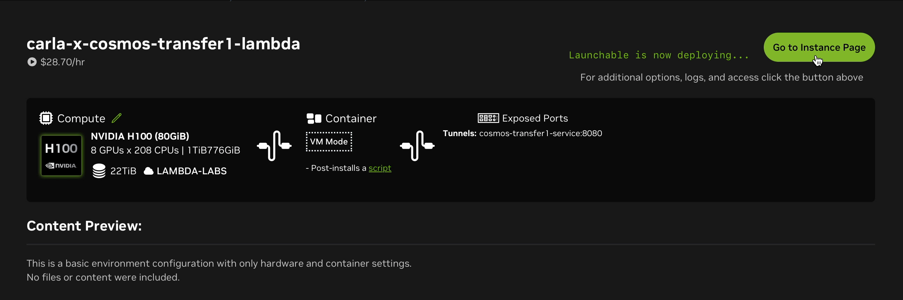
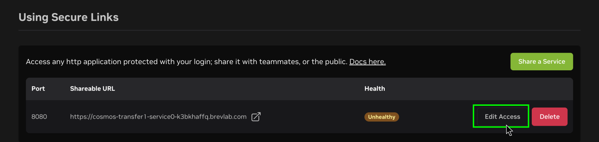
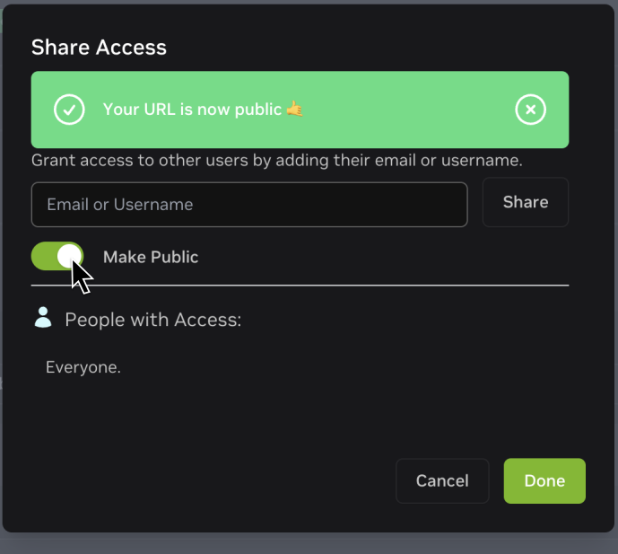
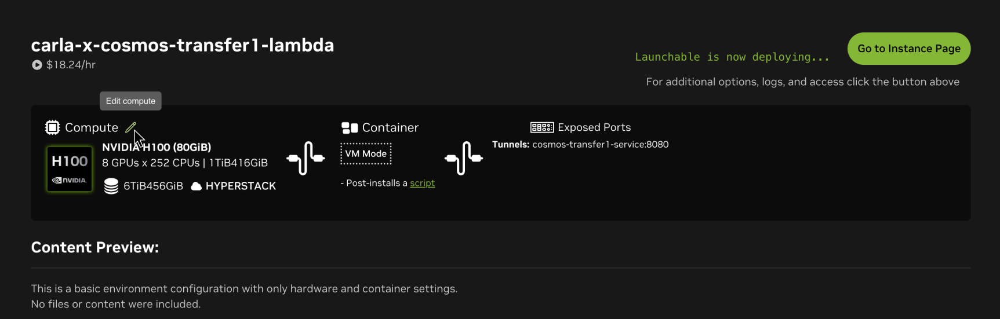
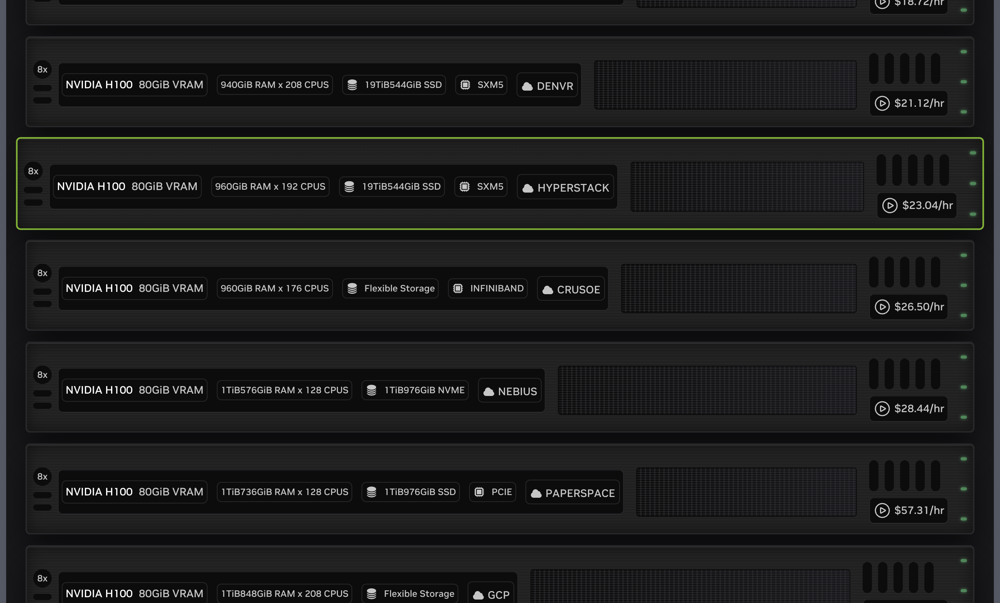

Carla 和 Cosmos Transfer 协同工作
Carla 可以连接到 NVIDIA Cosmos Transfer，以创建 Carla 中生成的合成数据的超逼真变体。

在此集成中，Carla 生成一系列视频，包括 RGB 图像、语义分割图像、深度图像和边缘图像，用于控制 Cosmos Transfer。这些控制视频由 carla_cosmos_gen.py 脚本生成。Cosmos Transfer 将这些控制视频与文本提示和一些额外的调整参数结合使用，以生成视频的新变体。

此集成采用客户端-服务器架构。cosmos_client.py 脚本向 Cosmos Transfer 服务器发送查询，服务器负责完成请求并将视频发送回客户端（此过程需要 1-2 分钟）。为此，用户需要先部署 Cosmos Transfer 服务。下一节将介绍部署您自己的 Cosmos Transfer 服务的不同选项。
部署 Cosmos Transfer 服务器
Cosmos Transfer 需要高性能数据中心 GPU，例如 NVIDIA H100。我们创建了多种轻松部署 Cosmos Transfer 服务器的方法。
方案 1：在 NVIDIA Brev 上一键部署
Carla 团队创建了一个 Brev 启动器，使用户能够轻松创建自己的 Cosmos Transfer 服务器。为此：
1. 点击 此处 注册Brev账号。请按照网站上的说明为您的账户充值。
2. 请访问链接 carla-x-cosmos-transfer1-lambda 。点击“部署可启动项(Deploy Launchable)”。

3. 点击“前往实例页面(Go to Instance Page)”。

4. 等待实例启动。

5. 将 URL 公开。
点击“编辑访问权限(Edit Access)”（记下共享网址(Shareable URL)和端口）：


6. 您的 Cosmos Transfer 服务已准备就绪！
注意
您可能会遇到特定云服务商提供的 GPU 实例数量有限的情况。在这种情况下，请尝试按以下步骤切换到其他云服务商：


方案 2：将您自己的服务部署到其他地方
如果您拥有合适的硬件，可以将 Cosmos Transfer 部署在 Docker 容器中。构建服务器镜像所需的文件位于 Carla 安装目录或软件包根目录下的 PythonAPI/examples/nvidia/cosmos/server 目录中。请按照以下步骤构建和部署 Cosmos Transfer 服务器：
1. 安装 Docker: 如果您的系统上尚未安装 Docker，请安装它 。
2. 安装 Conda: 请按照 这些说明 安装 Conda。
3. 构建服务器
在
PythonAPI/examples/nvidia/cosmos/server目录下打开终端，并运行make_docker.sh脚本：
./make_docker.sh
这一步骤可能需要 1-2 小时。
4. 部署
在您选择的环境中部署 Docker 镜像。我们建议使用至少配备 8 个 H100 GPU 的集群。对于较低的工作负载，单个 H100 GPU 就足够了。使用以下命令运行 Docker 镜像：
docker run -d --shm-size 96g --gpus=all --ipc=host -p 8080:8080 cosmos-transfer1-carla
5. 使用客户端发起请求
部署好 Cosmos 服务器后，您可以使用
cosmos_client.py脚本向其发出请求，并为endpoint参数提供相应的 IP 地址和端口。例如，对于本地部署在 8080 端口的服务器：
python cosmos_client.py http://localhost:8080 example_data/prompts/rain.toml
使用 Carla x Cosmos Transfer 客户端
要开始生成视频，您需要安装 Cosmos Transfer 客户端的 依赖项 。Cosmos Transfer 生成过程包括两个步骤：
1. 使用 Carla 为 Cosmos Transfer 生成控制视频
此步骤会根据 Carla 仿真日志文件生成多个用于 Cosmos Transfer 的控制视频。生成的视频可能包括以下内容：
- RGB
- 深度
- Edges
- 语义分割
- 实例分割
- Sky mask
2. 使用 Cosmos Transfer 生成风格迁移变体
此步骤使用 Cosmos Transfer1 模型生成原始控制视频的风格迁移变体。Carla 生成的控制视频被发送到运行 Cosmos Transfer1 模型的服务器。请求通过使用
cosmos_client.py脚本的简单 API 发送到服务器。Cosmos Transfer1 模型可以通过 TOML 文件中定义的提示符和其他几个控制参数进行控制。您可以在
client/example_data/prompts目录中找到许多 Cosmos Transfer1 配置示例。
依赖项安装
2. 下载完成后，解压缩文件：
tar -xzvf CARLA_0.9.16.tar.gz
3. 请按照 这些说明 安装 conda。如果您的系统已安装 conda，则可以跳过此步骤。
4. 创建一个 conda 环境（例如 carla-cosmos-client），并安装所有依赖项：
cd PythonAPI/examples/nvidia/cosmos
# 创建 carla-cosmos-client conda 环境
conda env create --file client/carla-cosmos-client.yaml
# 激活 carla-cosmos-client conda 环境
conda activate carla-cosmos-client
# 安装依赖项
pip install -r requirements.txt
pip install -r client/requirements_client.txt
PythonAPI/carla/dist 文件夹。找到与您的 Python 版本对应的 ..whl 文件（例如，carla-0.9.16-cp310-cp310-linux_x86_64.whl）：
# 将 carla-0.9.16-cp310-cp310-linux_x86_64.whl 替换为您的实际文件名
pip install carla-0.9.16-cp310-cp310-linux_x86_64.whl
生成 Cosmos-Transfer 控制输入
1. 启动 Carla
导航至 Carla 安装的根文件夹并执行启动脚本：
./CarlaUE4.sh
2. 从 Carla 日志生成控制视频
如果您想使用示例生成新的控制输入，可以运行
PythonAPI/examples/nvidia/cosmos/client/carla_cosmos_gen.py，并使用位于 PythonAPI/examples/nvidia/cosmos/client/example_data/logs/inverted_ai/ 目录下的名为 iai_carla_synthetic_log_1731622446_actorPOV4641_startTime3.7s_log.log 的示例日志文件。您还可以在同一目录下找到其他几个示例日志文件，供您进行实验。典型的调用方式如下：
cd PythonAPI/examples/nvidia/cosmos/client
# 将 /full_path_to_log/your_log.log 替换为日志文件的绝对路径，将 output_path 替换为存储结果的路径（可以是相对路径）
python carla_cosmos_gen.py -f full_path_to_log/your_log.log --sensors cosmos_aov.yaml --class-filter-config filter_semantic_classes.yaml -c ego_sim_id -s 0.0 -d 5.0 -o output_path
ego_sim_id值是自我载具的 Actor ID，供 Cosmos 生成脚本识别。如果您正在录制自己的场景，请务必记下id属性中的自我载具 Actor ID。例如：
python carla_cosmos_gen.py -f ${PWD}/example_data/logs/inverted_ai/iai_carla_synthetic_log_1731622446_actorPOV4641_startTime3.7s_log.log \
--sensors cosmos_aov.yaml \
--class-filter-config filter_semantic_classes.yaml \
-c 4641 -s 0.0 -d 5.0 -o output
注意: 对于示例日志，请将
ego_sim_id替换为 4641。这将生成一系列视频，这些视频随后将用于控制 Cosmos Transfer。
使用 Cosmos Transfer 生成风格迁移变体
准备好一组工件，并且 Cosmos Transfer 服务已部署并激活后，即可使用 cosmos_client.py 脚本发出请求。以下命令将根据 client/example_data/prompts 目录下的 rain.toml 示例配置文件中的提示和参数，生成 Cosmos Transfer 风格迁移视频。
cd PythonAPI/examples/nvidia/cosmos/client
# 将 https://url_to_server 替换为您的 CARLA-Cosmos-Transfer 服务器的 URL
python cosmos_client.py http://url_to_server:port example_data/prompts/rain.toml
第一个参数是 Cosmos Transfer 服务器的 URL 和端口。如果您是从 Docker 容器运行本地服务器，则可以是 localhost 或服务器的网络 IP 地址。如果您使用的是 NVIDIA Brev，则相应的 URL 和端口在 Brev 实例的详细信息中给出。
您可以通过编辑 rain.toml 配置文件中的文本提示和控制参数来进行实验并查看效果。同一目录下还提供了许多其他示例，您可以在 下一节 中了解更多关于这些参数的信息。
您可以通过命令行选择性地覆盖 TOML 中的某些字段，并选择输出的保存位置：http://localhost:8000/ts_traffic_simulation_overview/
python cosmos_client.py http://url_to_server:port \
example_data/prompts/rain.toml \
--output outputs/ \
--input-video example_data/artifacts/rgb.mp4 \
--edge-video example_data/artifacts/edges.mp4 \
--depth-video example_data/artifacts/depth.mp4 \ # optional
--seg-video example_data/artifacts/semantic_segmentation.mp4 \
--vis-video example_data/artifacts/vis_control.mp4 \ # optional
--seed 2048
了解 Cosmos-Transfer 配置
本节介绍 TOML 配置（参见 example_data/prompts/rain.toml）。客户端接受如下所示的扁平模式，也支持将相同的键嵌套在顶层 controlnet_specs 表中。
必填字段
| 字段 | 类型 | 描述 |
|---|---|---|
prompt |
string | 描述所需场景的文本 |
input_video_path |
string | 输入视频文件的路径 |
negative_prompt |
string | 描述输出中应避免的内容的文本 |
num_steps |
int | 扩散步数 |
guidance |
float | CFG 指导尺度 |
sigma_max |
float | 输入信号中添加部分噪声；[0, 80]。>= 80 表示忽略输入视频。 |
seed |
int | 为了保证可复现性，使用了随机种子。 |
可选标量字段
| 字段 | 类型 | 描述 |
|---|---|---|
blur_strength |
string | 用于准备视觉 vis 控制输入的模糊强度。取值范围： very_low, low, medium, high, very_high |
canny_threshold |
string | 外部生成边缘时使用的可选阈值预设 |
控制（均为可选）
如果设置控制项，则必须遵循以下规则：
| 控制 | 所需 keys | 笔记 |
|---|---|---|
edge |
input_control (string)control_weight (number) |
路径通常指向视频边缘。 |
depth |
input_control (string)control_weight (number) |
路径指向深度视频 |
seg |
input_control (string)control_weight (number) |
路径指向语义分割视频 |
vis |
control_weight (number) |
input_control 是可选的 |
验证约束
客户端在发送数据前会验证以下几个方面：
1. 以上所有必需的标量字段必须存在且类型正确。
2. 控制参数是可选的。如果提供了 edge、depth 或 seg 参数，则 control_weight 和 input_control 都必须存在。如果提供了 vis 参数，则 control_weight 必须存在，而 input_control 是可选的。
示例 TOML 文件位于 client/example_data/prompts/ 中。
命令行参数
cosmos_client.py 接受以下参数：
| 参数 | 类型 | 描述 |
|---|---|---|
endpoint |
string | 服务器的基本 URL（例如， http://localhost:8080） |
config_toml |
string | TOML 配置路径 |
--output |
string | 保存结果视频的文件或目录路径 |
--input-video |
string | 从 TOML 文件中覆盖 input_video_path |
--edge-video |
string | 覆盖 edge.input_control |
--depth-video |
string | 覆盖 depth.input_control |
--seg-video |
string | 覆盖 seg.input_control |
--vis-video |
string | 覆盖 vis.input_control |
--seed |
int | 覆盖 seed |
--retries |
int | 上传和生成的最大重试次数（默认值：3） |
--backoff-initial |
float | 初始退避 backoff 秒数（默认值：1.5） |
--backoff-multiplier |
float | 指数退避乘数（默认值：2.0） |
--jitter |
float | 随机抖动添加到退避机制中（默认值：0.5） |
--poll-interval |
int | 轮询作业状态的间隔时间（秒）（默认值：5） |
--result-timeout |
int | 获取作业结果的超时时间（秒）（默认值：120） |